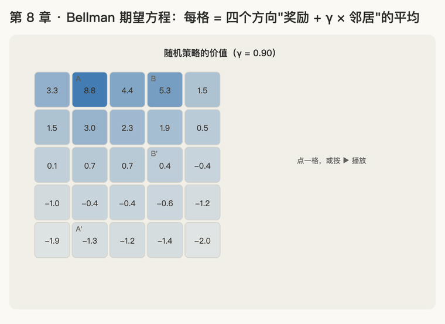
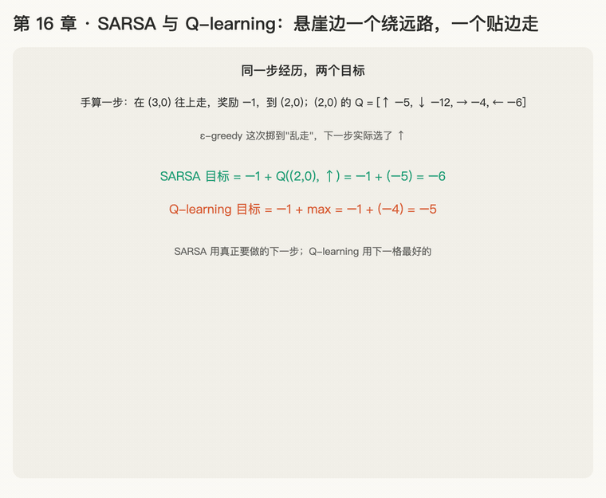

从零学强化学习 · 讲义目录
24 章 · 24 个动画（GIF + 可交互页面）· 42 张复习卡片 · 覆盖 Sutton & Barto 第 2–6、9、13 章与 CS 285 第 4–10、14 讲的主线
这本书讲什么
从"小狗看到主人举手、坐下、拿到零食"讲起，一步步走到今天训练机器人和大语言模型用的 PPO、GRPO：回报和折扣、马尔可夫决策过程、价值函数和 Bellman 方程、动态规划、蒙特卡洛和时序差分、Q-learning、DQN、策略梯度、Actor-Critic 与 GAE、TRPO / PPO，最后接到 LLM 训练里的 GRPO。
- 适合谁：想看懂强化学习公式、能去写 CS 285 作业的人。数学只要会加减乘除；概率与期望（第 4 章）、导数和梯度（第 17 章）、log（第 20 章）都在用到的那一章现场补。看过《从零读懂 Transformer》的话，向量、点积、softmax、加权平均可以直接用上。
- 读完能做什么：对照 Sutton & Barto 读懂第 3–6、13 章的公式；动手写 CS 285 HW2（策略梯度、baseline、GAE）和 HW3（DQN、Double DQN）；读 PPO、GRPO 论文的核心公式。
- 怎么读：按章顺序读。每章先看讲解和动画，再自己做练习，最后用复习卡片隔几天考自己。
讲解的特点
- 一次一小步：每个概念按"白话类比 → 公式（每个符号说清楚怎么读）→ 小数字亲手算一遍"讲，算例都能在纸上验证，而且全部用代码核对过（测试 22 个，全部通过）。
- 几个例子贯穿全书：训练小狗（第 1 章）、扫地机器人（第 5–9 章，书里的回收机器人）、书上的 5×5 和 4×4 网格世界（第 8–12 章，数字和图 3.2、3.5、4.1 一模一样）、随机游走 A–E（第 14–15、17 章）、悬崖行走（第 16 章）、走廊（第 18 章）、两台老虎机（第 13、20–21 章）。
- 每章一个动画：关键原理做成可交互页面，▶ 播放、→ 单步、↺ 从头开始，有滑块的可以拖动参数看结果怎么变；GIF 版直接嵌在正文里。
- 对照原文：讲到教材和 slides 的地方都标了本地文本的行号（如 S&B L4309–L4344），每章末尾的延伸阅读精确到章节、式号和行号。
- 术语不设门槛：缩写第一次出现就给英文全称并逐词解释（如 TD = Temporal Difference：时间上的 / 差分），全书缩写见 缩写与术语表。
- 每章都有代码对照：附录最后一节把本章的数字用 NumPy / PyTorch 跑一遍（Mac 上不需要 GPU），配测试核对和讲义一致，顺带讲代码里才看得到的坑（下标差 1、
1 − 0.7不等于 0.3、torch.no_grad()、(1 − done)……）；只算讲过的例子，不提前给练习答案。代码在solutions/chapter-code/。每章还配了一个 Jupyter notebook（solutions/chapter-code/notebooks/），讲解和代码放在一起，一格一格边读边跑。 - 每章收尾有口诀：几句话记住一章，全部口诀汇总在本页末尾。
示例动画
 第 8 章 · Bellman 期望方程 每格的价值 = 四个邻居打折的平均 + 奖励 讲义 · ▶ 交互 |
 第 16 章 · SARSA 与 Q-learning 悬崖边：一个绕远路，一个贴边走 讲义 · ▶ 交互 |
 第 23 章 · PPO 比率涨过 1.2 就停：剪裁目标的形状 讲义 · ▶ 交互 |
全部动画见 动画目录。
其他入口
- 复习卡片：../review.md（按间隔规则复习）
- 缩写与术语表：appendix-glossary.md
- 课程计划：../study-plan.md（本书 = 先修 + CS 285 第 4–10、14 讲的理论部分）
- 专题笔记：策略学习全景、运控：PPO / GRPO / SuperMimic
全书地图
第 1–4 章 问题是什么
智能体看状态、做动作、拿奖励 → 回报 G = 奖励加起来（γ 打折） → 期望 = 按概率的平均
第 5–9 章 把问题写成数学（MDP）
环境 p(s', r | s, a)、策略 π(a | s)
价值 v_π、q_π ── Bellman 期望方程（今天 = 眼前 + γ × 明天，取平均）
最优 v*、q* ── Bellman 最优方程（平均换成 max）
第 10–12 章 知道 p：动态规划
策略评估（反复套期望方程）→ 策略改进（对 q 贪心）→ 策略迭代 / 价值迭代 → GPI
第 13–16 章 不知道 p：边试边学
探索与利用（ε-greedy）、增量更新"旧 + α(目标 − 旧)"
MC（目标 = 真实回报 G）、TD（目标 = r + γV(s')）
SARSA（on-policy）、Q-learning（off-policy，直接学 q*）
第 17–19 章 状态太多：函数近似 + 价值路线
梯度下降、v̂(s, w) → DQN（经验回放 + 目标网络）→ Double DQN（挑和打分分开）
第 20–23 章 直接调策略：策略梯度路线
∇J = E[G ∇log π] → REINFORCE → baseline、reward-to-go 降方差
→ Actor-Critic（δ 当优势）、GAE（λ 调偏差 / 方差）→ 重要性采样、信任区域 → PPO（剪比率）
第 24 章 收尾：PPO → GRPO（LLM），接下来做 CS 285 HW2–HW4
目录
每章都配一个动画：GIF 在讲义正文里直接播放，▶ 交互是可以点按钮、拖滑块的页面（本地看需要起服务，见 动画目录"跑起来看"）。
| 章 | 主题 | 一句话精要 | 动画 | 卡片 | 状态 |
|---|---|---|---|---|---|
| 1 | 智能体与环境：交互循环、轨迹；和监督学习的区别；边界 | 看状态、做动作、拿奖励；奖励下标大一号；改不了的都是环境 | GIF · ▶ 交互 | R01、R02 | 正文完成，练习待做 |
| 2 | 奖励与回报：\(G_t\)；分幕与持续；奖励说"要什么" | 目标是把奖励加起来最多；\(G_t\) 从 \(R_{t+1}\) 加到底 | GIF · ▶ 交互 | R03、R04 | 正文完成，练习待做 |
| 3 | 折扣 γ：几何级数；\(G_t = R_{t+1} + \gamma G_{t+1}\) | 往后一步打一折；每步 +1 总数 1/(1−γ)；倒着推 | GIF · ▶ 交互 | R05、R06 | 正文完成，练习待做 |
| 4 | 概率与期望：加权平均、大数定律、条件期望 | 期望 = 值 × 概率再相加；多试几次平均会靠近它 | GIF · ▶ 交互 | R07 | 正文完成，练习待做 |
| 5 | MDP：动力学 \(p(s', r \mid s, a)\)；马尔可夫性质 | 环境是一张概率表；只看现在不翻历史 | GIF · ▶ 交互 | R08、R09 | 正文完成，练习待做 |
| 6 | 策略 \(\pi(a \mid s)\)：随机 / 确定性；RL 算法的三个部分 | 策略是行事手册；跑样本 → 评估 → 改策略 | GIF · ▶ 交互 | R10 | 正文完成，练习待做 |
| 7 | 价值函数 \(v_\pi\)、\(q_\pi\)；两者的关系 | 价值是"房价"：从这里出发的平均回报；v 是 q 的加权平均 | GIF · ▶ 交互 | R11、R12 | 正文完成，练习待做 |
| 8 | Bellman 期望方程；直接解方程；5×5 网格 | 今天 = 眼前奖励 + γ × 明天，取平均；A 格 8.8 | GIF · ▶ 交互 | R13、R14 | 正文完成，练习待做 |
| 9 | 最优价值与 Bellman 最优方程；贪心即最优 | 平均换成 max；有 \(q_*\) 直接挑；A 格 24.4 | GIF · ▶ 交互 | R15、R16 | 正文完成，练习待做 |
| 10 | 策略评估：反复套期望方程；4×4 网格 | 旧值代右边、新值写左边，终点的 0 往外渗 | GIF · ▶ 交互 | R17 | 正文完成，练习待做 |
| 11 | 策略改进与策略迭代；改进定理 | 每格挑 q 最大，处处不输；策略不变就是最优 | GIF · ▶ 交互 | R18、R19 | 正文完成，练习待做 |
| 12 | 价值迭代、异步 DP、广义策略迭代 GPI | 评估一轮就改进，合成一个 max；评估改进你推我拉 | GIF · ▶ 交互 | R20、R21 | 正文完成，练习待做 |
| 13 | 探索与利用：多臂老虎机、ε-greedy、增量更新 | 九成贪心一成乱试；新 = 旧 + 步长 × (目标 − 旧) | GIF · ▶ 交互 | R22、R23 | 正文完成，练习待做 |
| 14 | 蒙特卡洛：first-visit、常数 α；随机游走 | 一局玩完，用真实回报的平均估价值；要等终局 | GIF · ▶ 交互 | R24 | 正文完成，练习待做 |
| 15 | 时序差分 TD(0)：TD 误差、bootstrapping、TD vs MC | 走一步就用"下一步的估计"更新；方差小但有偏 | GIF · ▶ 交互 | R25、R26 | 正文完成，练习待做 |
| 16 | SARSA 与 Q-learning；on / off-policy；悬崖行走 | 真要做的下一步 vs 下一格最好的；绕远路 vs 贴边走 | GIF · ▶ 交互 | R27、R28 | 正文完成，练习待做 |
| 17 | 函数近似与梯度下降：导数、SGD、半梯度 | 表格装不下就用函数猜；朝下坡走一小步 | GIF · ▶ 交互 | R29、R30 | 正文完成，练习待做 |
| 18 | DQN：经验回放、目标网络、loss | Q 表换网络；随机抽旧经历；目标网络隔一阵对齐 | GIF · ▶ 交互 | R31、R32 | 正文完成，练习待做 |
| 19 | 过估计与 Double DQN | max 挑到运气最好的；主网络挑、目标网络打分 | GIF · ▶ 交互 | R33 | 正文完成，练习待做 |
| 20 | 策略梯度与 REINFORCE：log 导数技巧 | \(\nabla J = \mathbb{E}[G\,\nabla\log\pi]\)：好的推高，坏的压低 | GIF · ▶ 交互 | R34、R35 | 正文完成，练习待做 |
| 21 | baseline 与 reward-to-go：降方差 | 只看比平常好多少；动作只管身后事 | GIF · ▶ 交互 | R36、R37 | 正文完成，练习待做 |
| 22 | Actor-Critic、优势函数与 GAE | 演员演、评委打分；δ 当优势；λ 调偏差与方差 | GIF · ▶ 交互 | R38、R39 | 正文完成，练习待做 |
| 23 | 从 TRPO 到 PPO：重要性采样、KL、剪裁 | 旧数据乘比率；每次别改太多；比率剪在 0.8–1.2 | GIF · ▶ 交互 | R40、R41 | 正文完成，练习待做 |
| 24 | 收尾：全书地图、PPO → GRPO、KL 正则、下一步 | 同题答几遍互相比；拴住参考模型别学坏 | GIF · ▶ 交互 | R42 | 正文完成，练习待做 |


附录：缩写与术语表（遇到缩写先查这一页；每章开头另有一行"本章缩写"）。
状态说明：24 章正文、动画、代码对照、notebook 都已写完；每章末尾的 3 道练习还没作答。作答时按仓库约定把原话、对错、点评记进各章"练习与作答记录"，卡住或答错的地方补成新的复习卡片。
本书之后
| 接下来 | 内容 | 去哪 |
|---|---|---|
| 动手 | CS 285 HW2（策略梯度）、HW3（DQN + SAC）、HW4（LLM RL，[GPU]） |
study-plan 作业里程碑 |
| 本书没讲的理论 | 变分推断与 SAC（CS 285 第 11–13 讲）、model-based RL（第 15–16 讲）、offline RL（第 17–18 讲）、探索（第 19、23 讲） | study-plan 逐讲计划 |
| 运控 | PPO / GRPO 在腿足机器人上；SuperMimic | 运控学习计划 |
| LLM 对齐 | RLHF、DPO、GRPO 变体（DAPO 等） | CS336 a5、materials/books/lambert-rlhf-book.pdf |
| 世界模型 | Dreamer、TD-MPC2 | cis6280-world-models |
口诀汇总
| 概念 | 口诀 |
|---|---|
| 交互循环 | 看状态，做动作，拿奖励，再看新状态；奖励下标大一号；改不了的都是环境 |
| 回报 | 奖励是一个数，目标是加总数；\(G_t\) 从下一步加到底；奖励说要什么，别说怎么做 |
| 折扣 | 往后一步打一折；γ 为零最近视，γ 为一不打折；每步加一总数是 1/(1−γ)；今天总价 = 明天到手 + γ × 明天往后 |
| 期望 | 概率是占几成，加起来等于一；期望是加权平均；不知道概率就多试；竖线右边是已知 |
| MDP | 环境是张表；每组加起来等于一；马尔可夫：现在说明一切，不翻历史 |
| 策略 | 策略是手册；随机策略掷骰子，确定策略只一招；一步平均先 π 后 p；跑样本、评估、改策略 |
| 价值 | 价值是房价；q 先做 a 再按 π；v 是 q 按 π 的平均，q 是"眼前 + γ × 下一个 v"的平均 |
| Bellman 期望 | 今天的价值 = 眼前奖励 + γ × 明天的价值，再取平均；一个状态一个方程 |
| Bellman 最优 | 期望方程按 π 平均，最优方程挑最大，环境那层照旧平均；有了 v* 看一步，有了 q* 直接挑 |
| 策略评估 | 方程当规则：旧值代右边，新值写左边；误差每轮缩，最后停在真价值 |
| 策略迭代 | 换不换看 q；每格挑 q 最大，新策略处处不输；策略不变就停，停下就是最优 |
| 价值迭代 / GPI | 评估一轮就改进，合成一个 max；评估改进你推我拉，所有方法都是 GPI；DP 要知道 p |
| 探索与利用 | 只挑最好会被第一印象困住；九成贪心一成乱试；新估计 = 旧估计 + 步长 × (目标 − 旧估计) |
| MC | 不要 p 只要经验，一局局玩、记回报、取平均；要等终局，抖得厉害 |
| TD | 周二的预报修正周一的；TD 目标：一步奖励 + γ × 下一个的估计；TD = MC 的采样 + DP 的自举 |
| SARSA / Q-learning | SARSA 用真要做的下一步（同策略）；Q-learning 用下一格最好的（异策略）；悬崖边一个绕远路、一个贴边走 |
| 函数近似 | 状态太多不存表，带参数的函数来猜；导数是斜率；梯度下降朝下坡走一小步 |
| DQN | Q 表换网络，y 当答案做回归；存进盒子随机抽；复制一份 θ⁻ 隔一阵对齐 |
| Double DQN | max 挑到运气最好的那个；一组挑，另一组打分 |
| 策略梯度 | 不学价值直接调策略；\(\nabla\pi = \pi\nabla\log\pi\) 把梯度变成期望；好的推高，坏的压低 |
| baseline | 只看比平常好多少；概率加起来是一、导数是零，减 b 不改方向只降噪；动作只管身后事 |
| Actor-Critic / GAE | 优势 = Q − V；演员做动作，评委打分；δ 就是优势；后面的 δ 按 γλ 打折相加 |
| PPO | 重要性采样：乘 新/旧；每次别改太多；好的最多涨到 1.2 倍，坏的最多压到 0.8 倍 |
| GRPO | 同题答几遍，组内平均当 baseline，全对全错没信号；KL 拴住参考模型 |